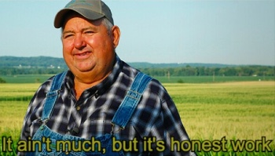

Audience
Target Audience
The target audience for my site are farmers
Personas
Persona 1
A local farmer
Persona 2
A woman living at home with a small garden in her backyard
Scenarios
- checking the weather daily to know what to wear
- checking for overnight frosts to know if plants should be covered
- check for how much rain has been seen over the last few weeks and how much to expect in the coming weeks
- check for trending temperatures up or down to help predict good time frames for working
- check wind trends to predict if plants need extra stakes/support to keep them upright